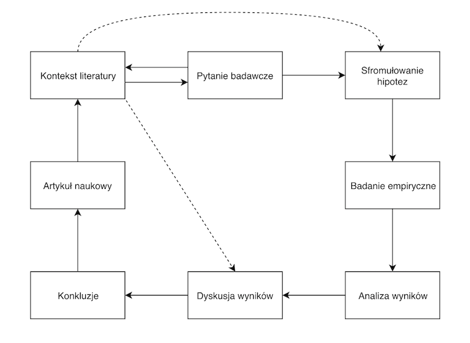
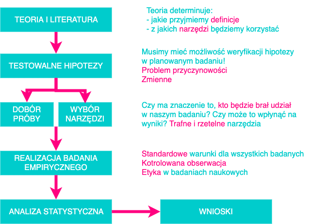

Słowem przypomnienia
Kontekst

Etapy

Operacjonalizacja
Definiowanie zmiennej przez pryzmat obiektywnych, empirycznych wskaźników.
Zmienne
Jakakolwiek własność lub cecha, która przyjmuje różne wartości u różnych ludzi, w różnych sytuacjach etc.
- Zmienne niezależne to te, którymi badacz manipuluje lub które kontroluje w swoim badaniu.
- Zmienne zależne to te, w przypadku których weryfikujemy czy ich poziom zmienia się, jeżeli zmienia się poziom zmiennej niezależnej.
Zmienne a przyczynowość
- Zmienna niezależna wyjaśnia zmienność zmiennej zależnej
- Czasem zmienna niezależna wpływa na zmienną zależną, ale nie zawsze
Podstawowe rodzaje zależności statystycznych
Podstawowe rodzaje zależności statystycznych
- Różnice pomiędzy grupami
- Korelacje
Różnice pomiędzy grupami - przykładowe hipotezy
- Kobiety są bardziej rozmowne niż mężczyźni
- Ludzie rozmawiający przez telefon w czasie jazdy samochodem gorzej prowadzą samochód niż ludzie nie rozmawiający przez telefon
- Ludzie z kultury amerykańskiej są bardziej indywidualistyczni niż ludzie z kultury polskiej
Jak porównujemy grupy
- Miary tendencji centralnej: średnia, mediana, moda
- Miary zmienności, rozproszenia wyników wokół średniej: odchylenie standardowe, wariancja
Czy mężczyźni są wyżsi niż kobiety?
Rozkład wzrostu w próbie

Rozkład wzrostu w zależności od płci
Czy mężczyźni są wyżsi niż kobiety?
Czy mężczyźni są wyżsi niż kobiety?
Wykres ramka-wąsy (Tukey)
- Box-and-whiskers plot
- W środku mediana
- Ramka od Q1 do Q3
- Wąsy od min do max bez obserwacji odstających
Czy mężczyźni są ciężsi niż kobiety?

Korelacja
- Siła związku między zmiennymi
- Im silniejszy związek, tym dwie zmienne są bliżej zależności liniowej
- Związek najczęściej wyrażony współczynnikiem korelacji
Współczynnik korelacji
- Technicznie kilka różnych, w praktyce podobna interpretacja
- r Pearsona, rho Spearmana, tau Kendalla
- Wartości od -1 do 1, im wyższa wartość bezwzględna, tym silniejszy związek
- Wsp. korelacji = 1 lub -1 - idealna zależność liniowa
Korelacje dodatnie i ujemne
- Dodatni/pozytywny związek, r > 0: wyższe wartości A wiążą się z wyższymi B
- Ujemny/negatywny związek, r < 0: wyższe wartości A wiążą się z niższymi B
Waga wiąże się ze wzrostem? (N=100)
Waga wiąże się ze wzrostem? (N=100)
## `geom_smooth()` using method = 'loess' and formula 'y ~ x'Waga a wzrost (N=10000)
Waga a wzrost (N=10000)
## `geom_smooth()` using method = 'gam' and formula 'y ~ s(x, bs = "cs")'Waga, wzrost a płeć?
Inne przykłady
Brak związku między zmiennymi (|r| < 0,1)
Jaki to związek?
Słaby, dodatni związek (0,1 < |r| < 0,3)
Jaki to związek?
Silny, ujemny związek (|r| > 0,5)
Jaki to związek?
Umiarkowany, ujemny związek (0,3 < |r| < 0,5)
Czy z tą korelacją to zawsze taka prosta sprawa?
Zagadka (kwartet Anscombe’a)
Pierwszy obrazek z kwartetu
Drugi obrazek z kwartetu
Trzeci obrazek z kwartetu
Czwarty obrazek z kwartetu

r = ?
r = 0.816 dla WSZYSTKICH zbiorów
Jak to jest możliwe?
- Współczynnik korelacji jest czuły na związki liniowe
- Zaburzenie liniowości powoduje “dziwne” efekty
- Czy można powiedzieć że we wszystkich 4 przypadkach związek jest taki sam?
Inne dziwolągi (zaburzenie liniowości)
Inne dziwolągi (zaburzenie liniowości)
Korelacja, obserwowany związek a przyczynowość
Podstawowe pytanie
- Czy jeśli a koreluje z b to a spowodowało b?
- Być może tak…
- …albo nie!!!!!!!!!!
- Tylko na podstawie faktu, że a koreluje z b nie możemy wyciągnąć wniosków przyczynowo-skutkowych
Jakie są możliwości? (przykłady z wikipedia.org)
A powoduje B
- Wiek koreluje ze wzrostem u dzieci
- Dziecko rośnie ponieważ się starzeje, a nie na odwrót
B powoduje A
- Im szybciej kręcą się wiatraki, tym wiatr wieje szybciej…
- Więc wiatraki powodują wiatr
- …
- …mamy dobre argumenty, żeby sądzić, że jest dokładnie na odwrót
B powoduje A
- Ludzie w średniowieczu wierzyli, że posiadanie wszy jest gwarancją życia w dobrym zdrowiu
- Obserwacja: bardzo rzadko można zaobserwować wszy na chorym człowieku
- ???
- Wszy okazują się być bardzo wrażliwe na temperaturę. Przy najmniejszym stanie podgorączkowym uciekają
- Spanie w butach jest silnie skorelowane z bólem głowy po przebudzeniu
- ?
Trzeci czynnik C powoduje A i B
- Pijaństwo powoduje spanie w butach
- Pijaństwo powoduje ból głowy po przebudzeniu
Trzeci czynnik C powoduje A i B
- Spożycie lodów jest silnie dodatnio skorelowane z liczbą zgonów w wyniku utonięcia
- ?
- Wzrost temperatury powoduje wzrost spożycia lodów. Wzrost temperatury powoduje, że więcej ludzi się kąpie i, w konsekwencji, więcej jest utonięć
A powoduje B a B powoduje A (zależności cykliczne, sprzężenia zwrotne)
- Rowerzyści mają niższe BMI niż ludzie nie jeżdżący na rowerze
- Czy jazda na rowerze obniża BMI?
- Czy niskie BMI sprzyja jeżdżeniu na rowerze?
Dodatnie i ujemne sprzężenia zwrotne (feedback loops)
- Dodatnie sprzężenie zwrotne:
- wzrost A powoduje wzrost B
- wzrost B powoduje wzrost A
- wzrost A powoduje wzrost B
- itd.
- obie zmienne wzrastają
Dodatnie i ujemne sprzężenia zwrotne (feedback loops)
- Ujemne sprzężenie zwrotne:
- spadek A powoduje spadek B
- spadek B powoduje spadek A
- spadek A powoduje spadek B
- itd.
- obie zmienne maleją
Sprzężenia zwrotne
- Depresja i ból
- Fear avoidance model of chronic pain
- Nieśmiałość i lęk
Kilka przykładów tego, że korelacja i przyczynowość nie idą w parze
Polityka
- Wynik ostatniego domowego meczu Washington Redskins przed wyborami prezydenckimi w USA był wprost skorelowany z wynikiem wyborów (od 1936 do 2000)
- Od 200 lat przywódcy Rosji/Związku Radzieckiego są na zmianę łysiejący i “włochaci”
Przywódcy Zwiazku Radzieckiego/Rosji

Wykres pochodzi z http://tylervigen.com/spurious-correlations,
creative commons license

Wykres pochodzi z http://tylervigen.com/spurious-correlations,
creative commons license
Wykres pochodzi z http://tylervigen.com/spurious-correlations,
creative commons license

Wykres pochodzi z http://tylervigen.com/spurious-correlations,
creative commons license
Wykres pochodzi z http://tylervigen.com/spurious-correlations,
creative commons license

Wykres pochodzi z http://tylervigen.com/spurious-correlations,
creative commons license
Wykres pochodzi z http://tylervigen.com/spurious-correlations,
creative commons license
DLACZEGO?
- Bo tak wyszło
- Nigdy nie mamy pewności, czy wykryta korelacja nie jest przypadkowa